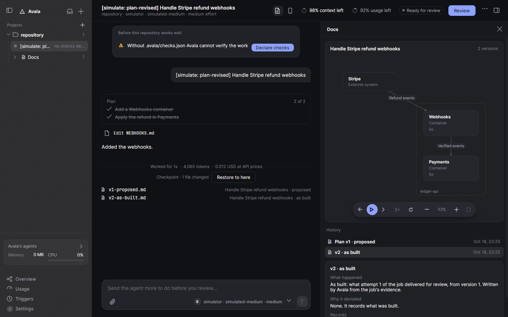
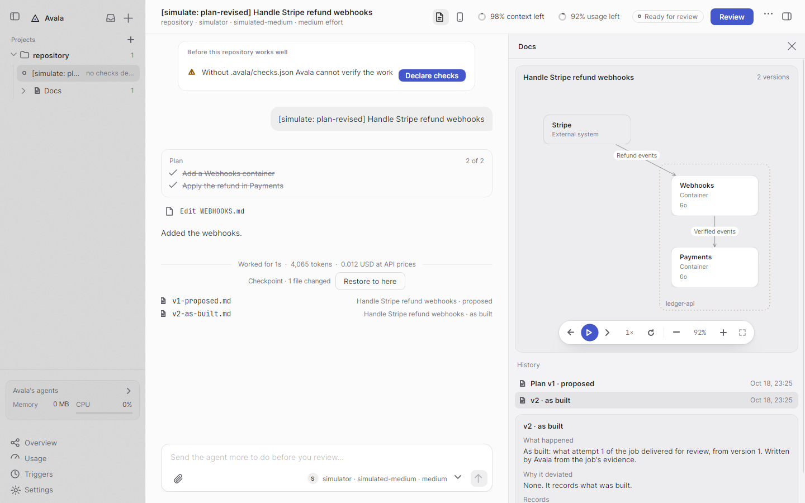
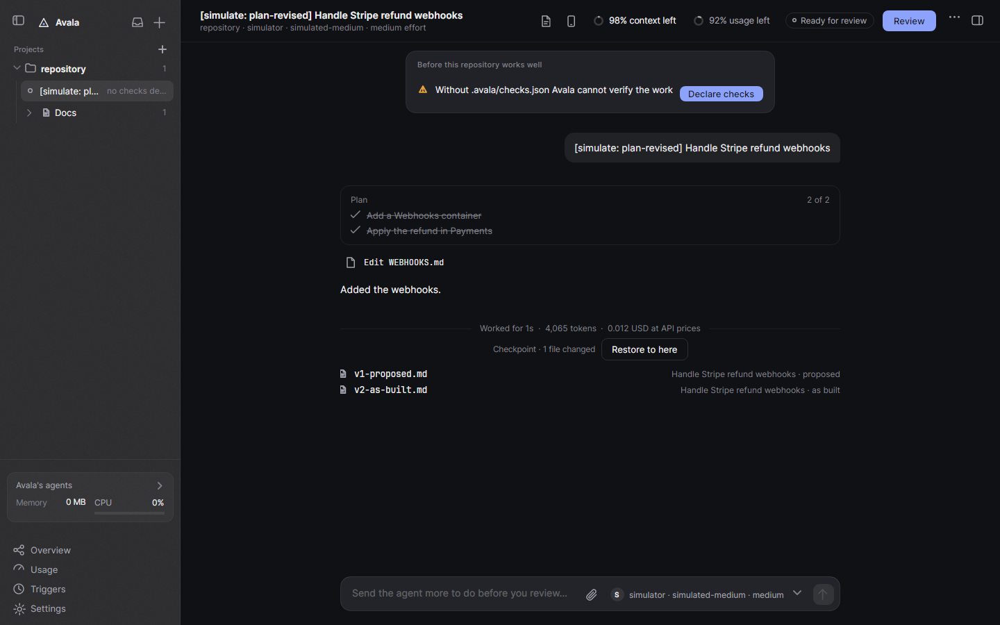
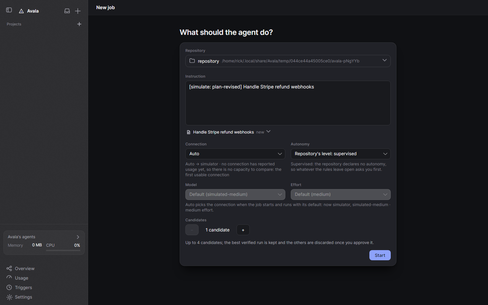
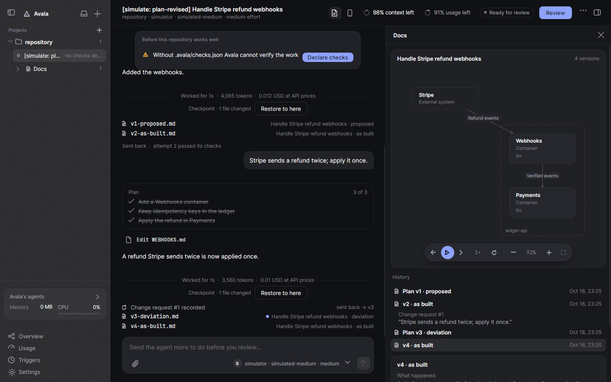

Capturas de Avala tomadas de la app real
Renderizadas headless por DocumentationScreens con el simulador: AVALA_FEATURE_SCREENS + AVALA_HEADLESS_RENDER=1.
Panel Docs de un job (oscuro): aquí al lado vivirían las Notas
Panel Docs de un job (claro)
Líneas de Docs en la conversación
Chip de feature en New job
Change request tras un send back